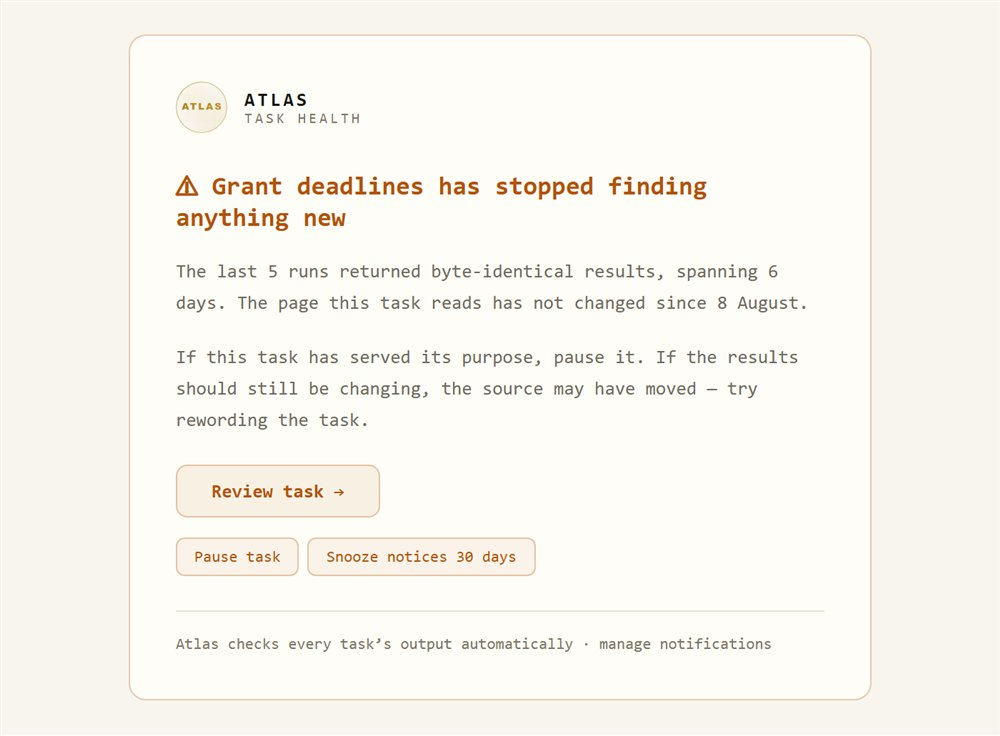
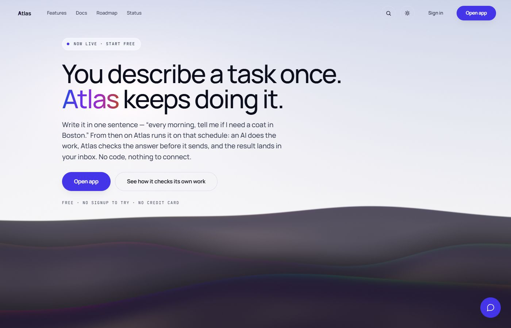
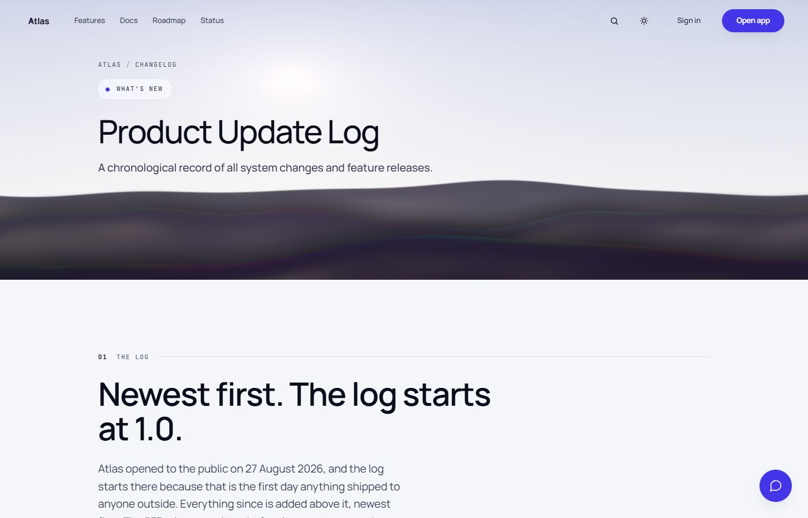

Project · live on the public web
Type “every weekday at 8am, send me the top tech news” and Atlas runs it on that schedule, checks the answer, and sends you the result.
Atlas
01 — The life of one scheduled task
One scheduled task, end to end
The seven stages as text
- Built
- 1 Apr – 4 Oct 2026, with commits on 112 days
- Public launch
- 27 Aug 2026
- Commits
- 2,720 to production
- Releases
- 337 internal before 1.0, then 13 public
- Code
- ~140k lines of app code, ~212k lines of tests
- Built with
- Node and Express, PostgreSQL, Clerk, Railway, Cloudflare, Brevo, LemonSqueezy. Gemini by default, or your own OpenAI or Anthropic key. Playwright and axe-core.
The two code figures above were counted with wc-style rules on 13 September
and were not remeasured on 16 September or 12 October; the 875,541-line census on the front page counts code lines
under a different rule. The two do not reconcile, so they are never placed side by side.
02 — The product
What it does, and how it holds
What it does
- Reads the schedule straight out of the sentence. Nobody fills in a cron field.
- Sends results by email or daily digest, Discord, Slack, Telegram or signed webhook, with Google Sheets and GitHub in beta.
- Reply to a result email to change the task, with one-click undo.
- Grades every run and warns you when a task has quietly stopped finding anything new.
- Fetches live stock and crypto prices and headlines before the AI writes: about 230 company names map to tickers, and 37 coins are recognised.
- Invite a friend and you both get 10 more runs.
- The home page runs your sentence before you sign up, and Email me this every weekday turns that try into a task of your own, with the schedule it spotted.
- A task’s first email says what it is and when the next one comes, and stopping Atlas’s emails takes one click with no sign-in.
- A help assistant on the site answers questions about Atlas from the site’s own pages and nothing else.
How it’s built
- One scheduler at a time. Postgres advisory locks keep scheduled jobs on a single leader, so a task never fires twice across instances.
- Encrypted backups. Nightly database snapshots are AES-256-GCM encrypted and stored off-site, and a full restore has been checked end to end.
- Stored credentials are encrypted at rest.
- A launch gate that fails closed. The server alone decides whether the site is open, and a missing or malformed setting keeps it shut.
- Answer quality. A classifier retries weak answers or switches provider, and an LLM-as-judge eval harness has run 52 times.
- A help assistant that can only read the site. It answers from the same generated index of the site’s pages that search uses, with no web tool anywhere in the path; a question that lands on no page is turned down before any model call, and past a daily spending ceiling it hands back links instead.
- One price fetch per stock or coin. When several runs ask for the same quote at the same moment, they share one request instead of each making its own.
- A Discord bot, run as its own service, posts each release to the Atlas server and sends me alerts and a morning digest in a private channel. It posts only as itself and never replies to members.
- Release gate, 9 Sep: 456 unit test files and 596 Playwright tests passing, none flaky (from the project’s release record).

03 — The release history
Thirteen releases over a current of 2,720 commits
Loading the changelog…
the release scene has not started yet
The same releases are listed in full below, newest first, with every entry each one shipped.
The 337 pre-1.0 releases were never shipped to anyone outside, so the public log restarts at 1.0 on 27 August rather than continuing from v2.365.0. Their count is confirmed against the changelog archive; their individual dates are not published here, so the scene shows them as a span rather than inventing ten dozen marks.
04 — The system
Fifty parts, sixty-one links
What Atlas actually runs on, transcribed from the map my own dashboard draws. Point at a part, or tab through them, to see what it does and what it touches. Hostnames, ports, paths, keys, buckets and every live probe reading are deliberately left out.
Its tier, its kind and what it does appear here. The whole map is also written out as text below.
the map has not started yet
All 50 parts as text

